Fonética y español oral
La sílaba, los diptongos y los hiatos
Joseph V. Casillas
Instituto Franklin: otoño 2015
Introducción
La lingüística
Pensad...
- ¿Qué es la lingüística? ¿Puedes dar una definición?
- ¿Cuáles son las ramas de la lingüística?
- ¿Cuál es la diferencia entre un análisis descriptivo y un análisis prescriptivo?
- ¿De qué tipo de análisis se ocupa la lingüística?
- ¿Qué es más importante para los lingüistas: la escritura o el habla? ¿Por qué?
Las ramas de la lingüística
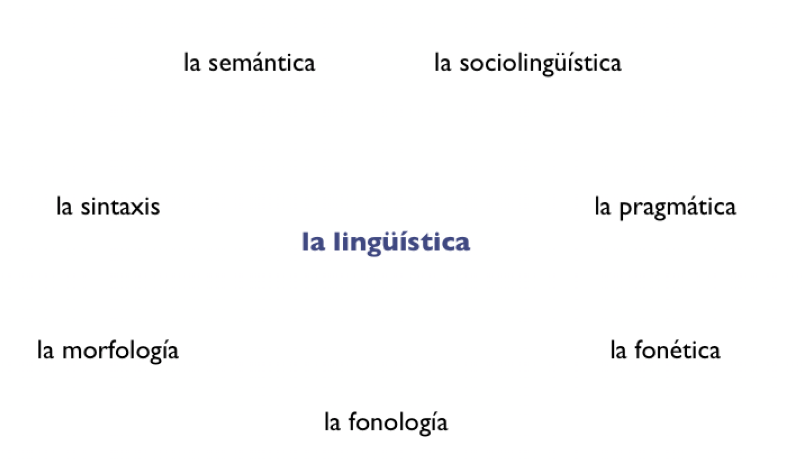
Los grafemas, los dígrafos y los fonemas
- Los grafemas: las letras del alfabeto, lo que usamos para escribir.
- ej. "c", "l", "r"
- Los dígrafos: la combinación de dos grafemas para representar un sólo sonido.
- ej. "ch", "ll", "rr"
Los grafemas, los dígrafos y los fonemas
- Los grafemas: las letras del alfabeto, lo que usamos para escribir.
- ej. "c", "l", "r"
- Los dígrafos: la combinación de dos grafemas para representar un sólo sonido.
- ej. "ch", "ll", "rr"
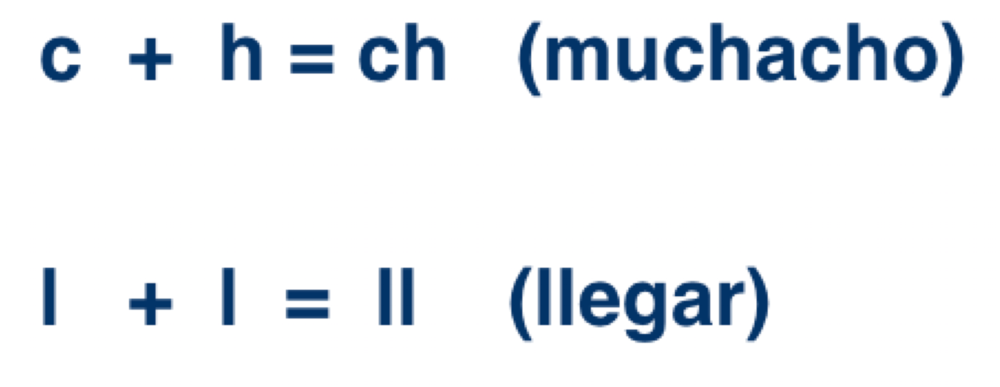
Los grafemas, los dígrafos y los fonemas
- Existen 27 grafemas y 3 dígrafos en español
- Es decir, el alfabeto consiste en 30 letras
Los grafemas, los dígrafos y los fonemas
- Los grafemas: las letras del alfabeto, lo que usamos para escribir.
- Los dígrafos: la combinación de dos grafemas para representar un sólo sonido.
- Los fonemas: las unidades de sonido
Los fonemas
- Los fonemas: las unidades de sonido
- Al escribir, utilizamos los grafemas y los dígrafos para comunicarnos.
- Para representar por escrito las unidades de sonido de una lengua dada, utilizamos los fonemas, los cuales escribimos mediante los símbolos del Alfabeto Fonético Internacional (AFI, o IPA en inglés)
Los fonemas
- En la fonética, los grafemas y los dígrafos se escriben entre comillas
- En cambio, los fonemas se escriben entre barras
Ej.
- "a" ---> /a/
La sílaba y el silabeo
El silabeo
Lo básico...
- El silabeo es cómo separamos las palabras por sílabas (silabificación)
- Cada sílaba debe tener un núcleo
- El núcleo puede ser o bien una vocal o bien un diptongo
- Agrupamos las consonantes alrededor del núcleo
El silabeo
- En español, existe una estructura silábica preferida
- Es decir, las sílabas tienden a configurarse de una manera determinada
El silabeo
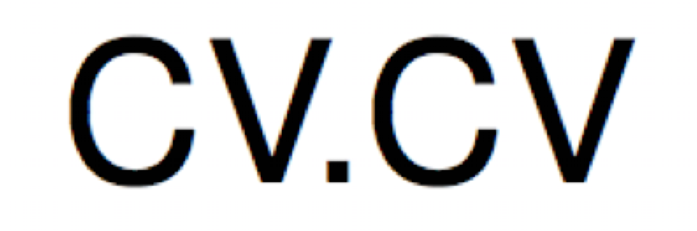
El silabeo
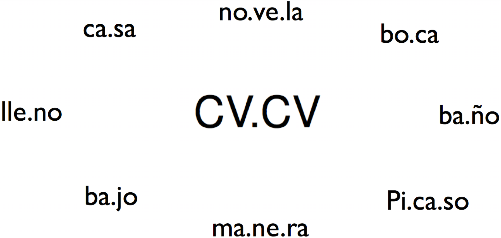
El silabeo
Sin embargo, sabemos que existen muchas otras estructuras silábicas en español...
| -v- | a-e-re-o |
| -vc- | al-go |
| -vcc- | obs-tan-te |
| -cv-v- | te-a-tro |
El silabeo
Sin embargo, sabemos que existen muchas otras estructuras silábicas en español...
| -cdv-cv | cie-go |
| -cvd-cv | pei-ne |
| -cdvc-cv | tien-da |
| -ccdv-cv | prue-ba |
- ¿Cómo se forma una sílaba?
El núcleo vocálico
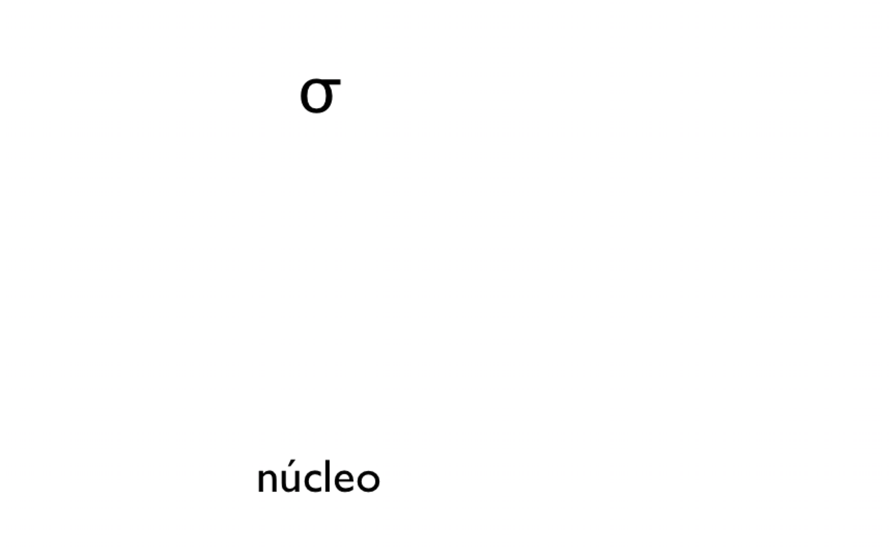
El núcleo vocálico
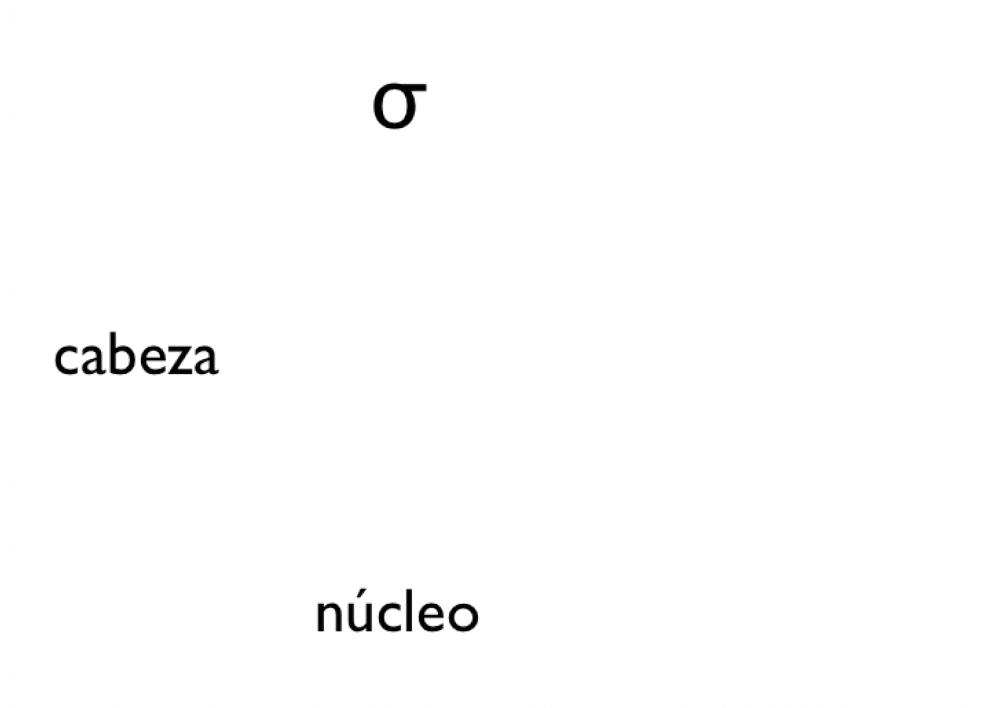
El núcleo vocálico
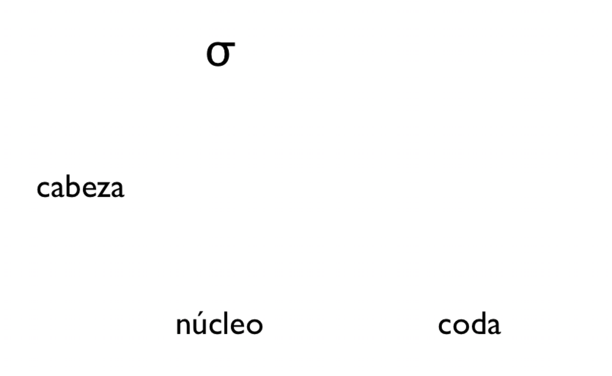
El núcleo vocálico
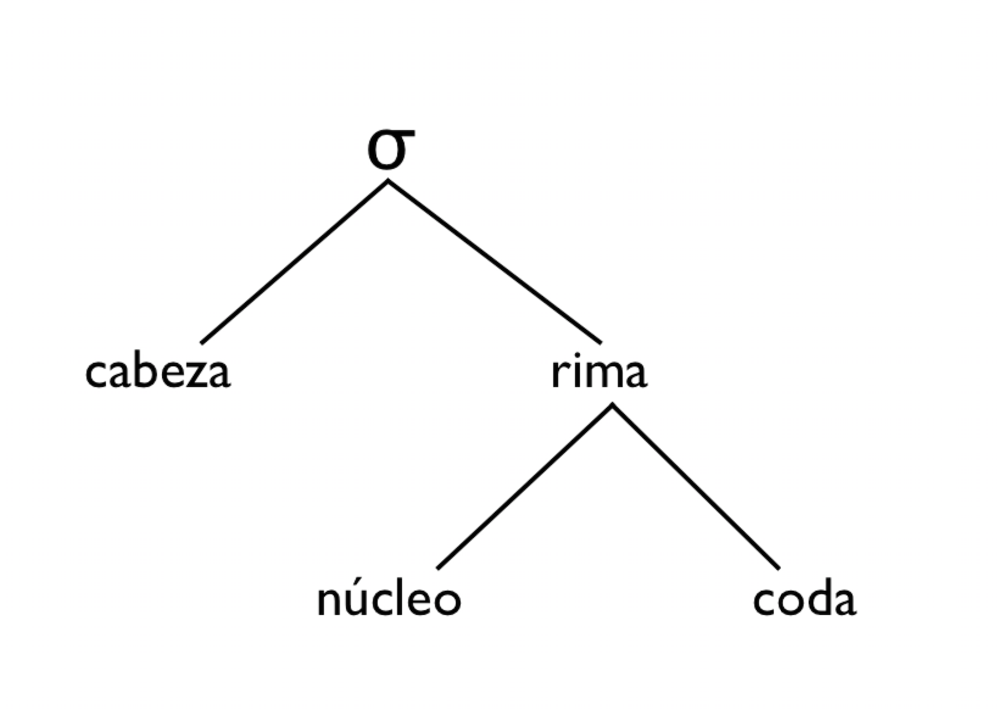
Los grupos consonánticos
Lo fundamental para poder silabificar cualquier palabra en español es saber los posibles grupos consonánticos
- Grupo consonántico: Una serie de dos o más consonantes
- Ciertas consonantes pueden combinarse
- Otras son incompatibles dentro de una sílaba
Las combinaciones permitidas
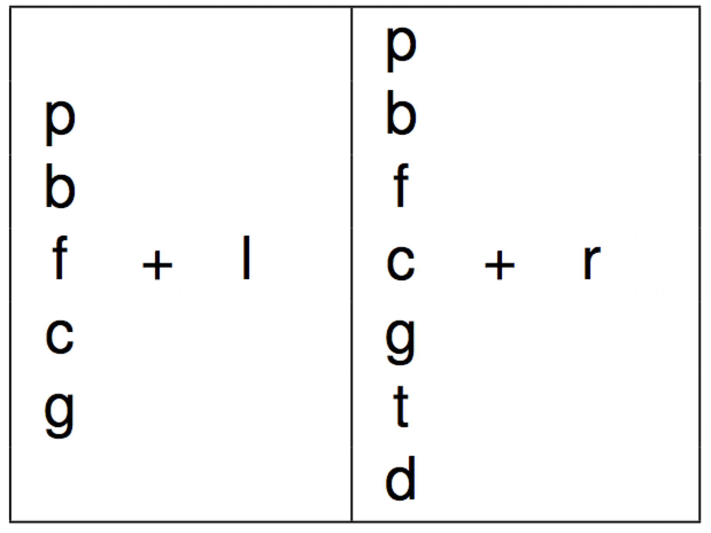
Las combinaciones permitidas
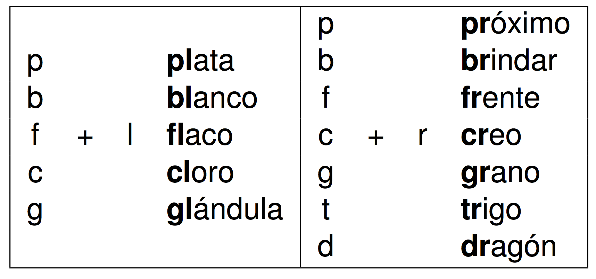
A practicar...
- leer
- construcción
- desarreglado
- maestro
- también
- manchar
- adyacente
- influencia
A practicar...
- leer
- construcción
- desarreglado
- maestro
- también
- manchar
- adyacente
- influencia
- le.er
- cons.truc.ción
- de.sa.rre.gla.do
- ma.es.tro
- tam.bién
- man.char
- ad.ya.cen.te
- in.fluen.cia
Los monoptongos y los diptongos
Los monoptongos
- Monoptongo: Una sílaba compuesta por una vocal.
Ejemplos
- “casa” ===> /ˈka.sa/
- “taburete” ===> /ta.bu.ˈre.te/
Los diptongos
- Diptongo: La secuencia de dos vocales seguidas (una vocal y una deslizada) en una sola sílaba.
Ejemplos
- “canción” “can.ción” ===> /kan.ˈsi̯on/
- “puerta” “puer.ta” ===> /ˈpu̯er.ta/
Los diptongos
- Diptongo: La combinación de dos vocales (una vocal y una deslizada) en una sola sílaba.
- Hay 3 tipos de diptongos
- Se clasifican según las vocales que contengan
Tipos de diptongos
3 tipos de diptongos
- Diptongo creciente: Vocal débil en posición inicial
- Diptongo decreciente: Vocal débil en posición final
- Diptongo acreciente: Dos vocales débiles (distintas) juntas
Clasificación de las vocales
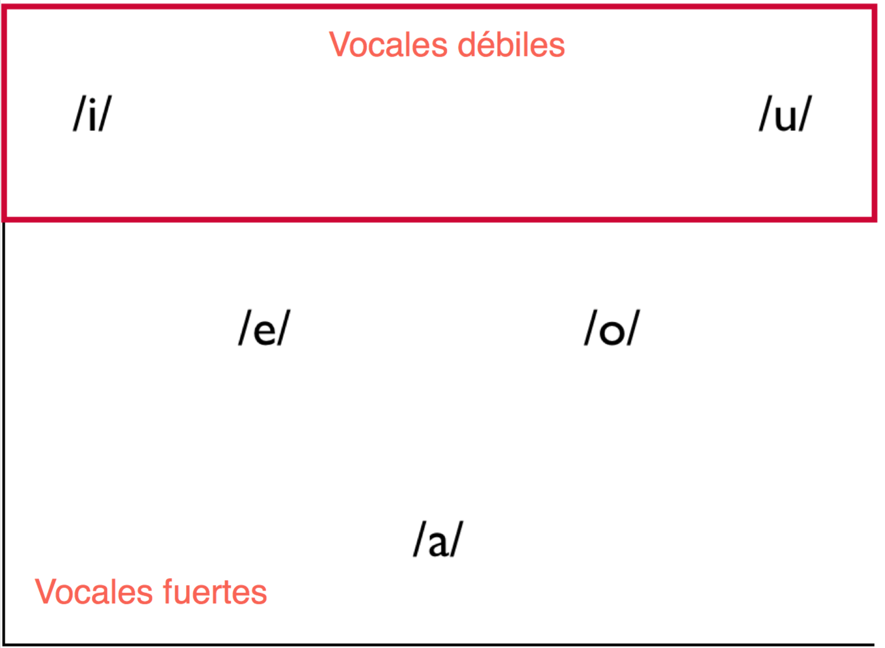
Clasificación de las vocales
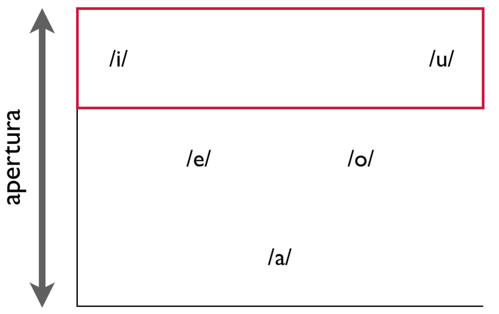
Clasificación de las vocales
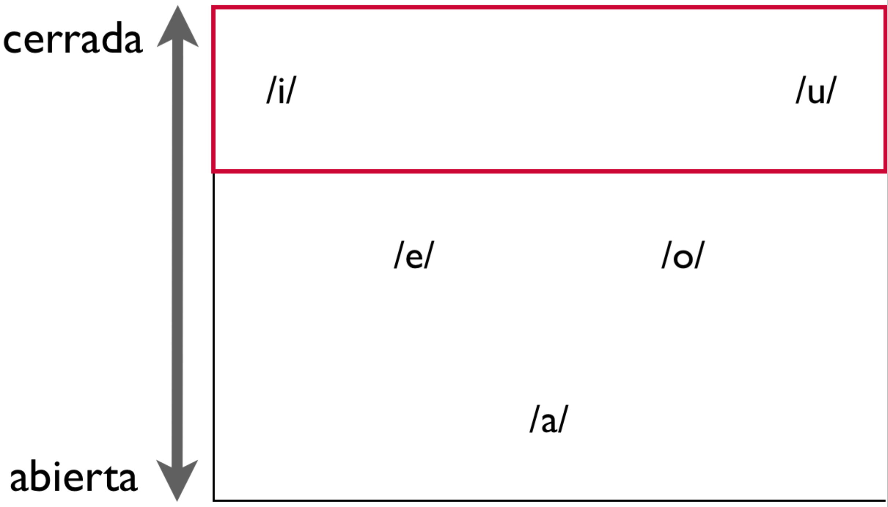
- Cuanto más abierta, más enegría
Los diptongos crecientes
| ie | ej. “sierra” | /si̯é.ra/ | |
| ia | ej. “piano” | /pi̯á.no/ | |
| io | ej. “idiota” | /i.di̯ó.ta/ | |
| ue | ej. “cuento” | /ku̯én.to/ | |
| ua | ej. “cuadro” | /ku̯á.dro/ | |
| uo | ej. “cuota” | /ku̯ó.ta/ |
- débil ===> fuerte
- cerrada ===> abierta
- menos energía ===> más enegría
Los diptongos decrecientes
| ei/ey | ej. “reina” “rey” | /réi̯.na/ /rei̯/ |
| ai/ay | ej. “traigo” “caray” | /trái̯.go/ /ka.rái̯/ |
| oi/oy | ej. “oigo” “voy” | /ói̯.go/ /boi̯/ |
| eu | ej. “deuda” | /déu̯.da/ |
| au | ej. “jaula” | /xáu̯.la/ |
| ou | ej. “genitourinario” | /xe.ni.tou̯.ri.ná.ri̯o/ |
- débil ===> fuerte
- cerrada ===> abierta
- menos energía ===> más enegría
Los diptongos acrecientes
| iu | ej. “ciudad” | /si̯u.dád/ o /sju.dád/ |
| ui/uy | ej. “buitre”, “muy” | /bu̯í.tre/ o /bwí.tre/, /mui̯/ |
- débil ===> fuerte
- cerrada ===> abierta
- menos energía ===> más enegría
¿Monoptongo o diptongo?
Transcribid las siguientes palabras y determinad si contienen un diptongo:
- aprueba
- belleza
- cubierto
- gobernante
- devuelto
- volver
- averiguar
- cueva
- soberbio
- habitual
¿Monoptongo o diptongo?
Transcribid las siguientes palabras y determinad si contienen un diptongo:
- /a.pru̯é.ba/
- /be.ʝé.sa/
- /ku.bi̯ér.to/
- /go.ber.nán.te/
- /de.bu̯él.to/
- /bol.bér/
- /a.be.ri.gu̯ár/
- /ku̯é.ba/
- /so.bér.bi̯o/
- /a.bi.tu̯ál/
Vocal vs. deslizada
- Las vocales: /i/ /e/ /a/ /o/ /u/
- Las deslizadas: /i̯/ /u̯/
- Las deslizadas cuentan con una duración más corta.
Las vocales
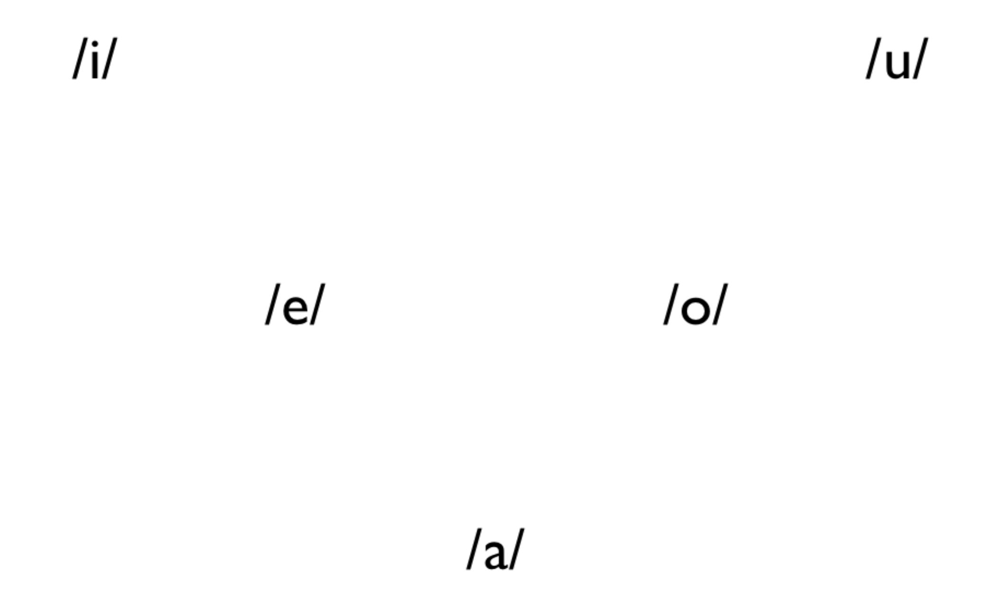
Las vocales
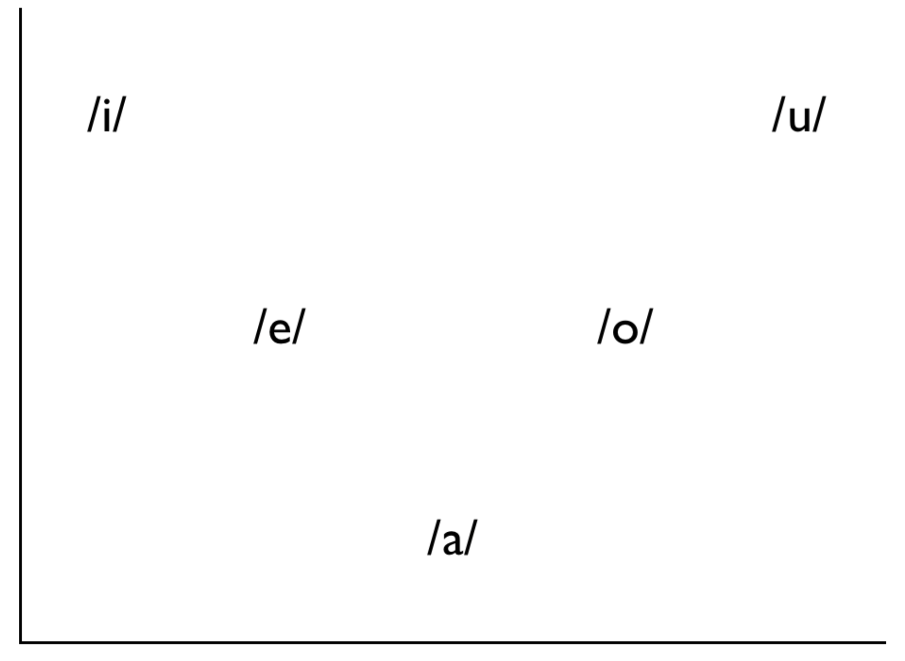
Las vocales
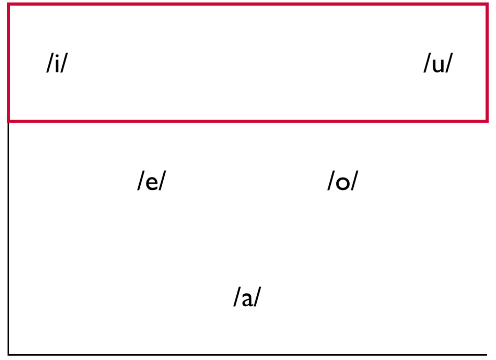
Las vocales
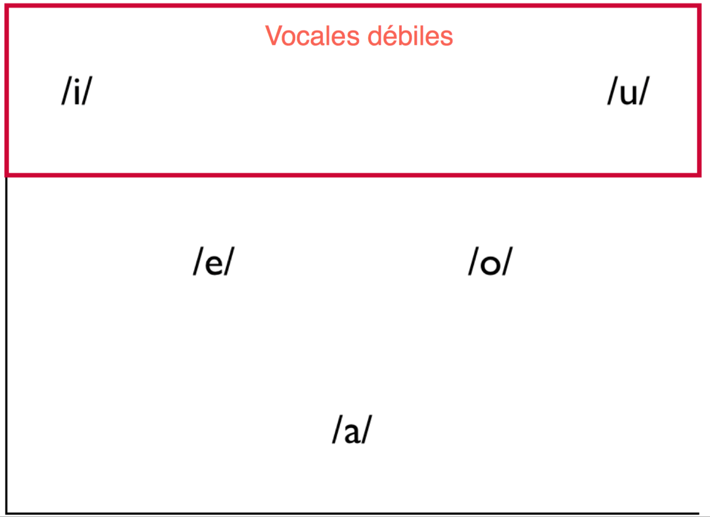
Las vocales
Los hiatos
Los hiatos
- Hiato: La secuencia de dos vocales seguidas que se separan en dos sílabas
Ejemplos
- área /ˈa.ɾe.a/
- héroe /ˈe.ɾo.e/
Los hiatos

- Hiato La secuencia de dos vocales seguidas que se separan en dos sílabas
Ejemplos
- área /ˈa.ɾe.a/
- héroe /ˈe.ɾo.e/
Lo que hemos visto...
Conceptos:
- la lingüística
- grafema/dígrafo vs. fonema
- la sílaba
- composición (ataque, núcleo, coda)
- grupos consonánticos
- monoptongos
- diptongos (3 tipos)
- hiatos
Para la semana que viene...
Estudiad:
- los resúmenes de esta semana
- puede que haya una prueba